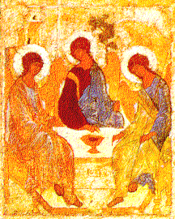

Laure de la Trinité Saint-Serge: Cathédrale de la Trinité
C'est le plus ancien bâtiment en pierre du monastère.
elle fut érigée sur la tombe de Saint Serge en 1422, année de sa canonisation.
Ses cendres sont conservées dans une châsse en argent à l'intérieur de la
cathédrale.
La décoration intérieure d'origine avait été réalisée par Roublev et Tcherny,
mais la plupart de leurs oeuvres sont recouvertes par d'autres peintures.
L'icône "La Trinité" de l'iconostase est une copie de Roublev (1420) dont
l'original se trouve à la galerie Tretiakov.

|